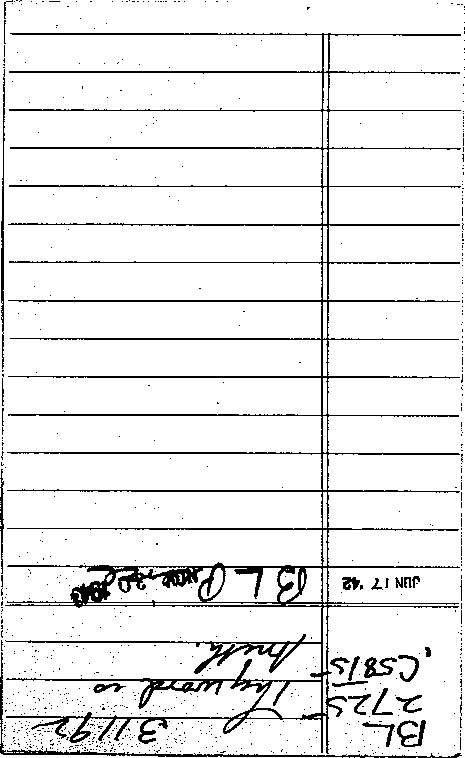
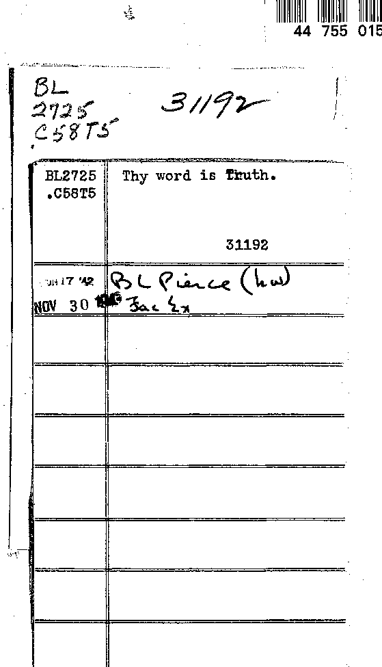

Class Tb'S.’S Booled.
Besides the main topic this book also treats of
Subject No: On page
Subject No. On page
i
AN ANSWER TO ROBERT iNGERSOIili’S CHARGES AGAINST CHRISTIANITY.
STUd«.VTs,
TRACTS.
“THY WOHt> IS THUTH-”
AN ANSWER TO
ROBERT INGERSOLL’S CHARGES AGAINST CHRISTIANITY.
Mr. Robert Ingersoll, in his now celebrated “Christmas Sermon,’’ took Christianity severely to task, and awakened considerable excitement in religious circles. The Rev. Buch ley, D. D., of the Methodist Episcopal Church, New York City, declares that the pith of Mr. Ingersoll’s “Christmas Sermon ’ ’ is found in three charges which he makes against Christianity, and which Dr. Buckley denominates “ three gigantic falsehoods.” They are as follows :—
First—“ Christianity did not come with tidings of great joy, but with a message of eternal grief.”
Second—“ It (Christianity) has filled the future with fear and flame, and made God the keeper of an eternal penitentiary destined to be the home of nearly all the sons of men.”
Third—“ Not satisfied with that, it (Christianity) has deprived God of the pardoning power. ’ ’
5
Some of the friends of Christ, of the Bible and of true Christianity urge that this modern Goliath be answered by some pebbles of truth from our sling—diredted not against a great and seemingly honest man, but at the system of errors which he, no doubt honestly, supports; and in defence of the Truth and of the timid and doubting children of Zion— “ Israelites indeed.”
CHARGE I. EXAMINED.
We reply to the first charge, that, whilst the name Christianity stands for much that is spurious both in dodtrine and in pradtice to-day, Mr. Ingersoll’s arraignment relieves us from the necessity of examining these; for his remarks apply only to the inception of the Christian system —the message with which it came. The issue is a fair one: Christianity could not be judged more fairly than by the dodlrines of its founders. .
Reversing the order of the statement, we will demonstrate (i) that Christianity did not come with a message of eternal grief, and (2) that it did come with good tidings of great joy which shall be to all people.—Luke 2:10.
The New Testament embodies a statement of all the doctrines and teachings of primitive Christianity, and neither the term “ eternal grief" nor any equivalent term is to be found therein. Grief is indeed implied in the statements which predidt some serious disappointments among church people in the end of the present age (Matt. 8 : 18 ; 25 : 30; Luke 13: 28), but none of these say one word about an eternity of grief and pain. It is true also that a certain parable (Luke 16 : 19) represents the downfall of the Jewish polity from divine favor, and that, as a “ Rich Man faring sumptuously,” etc., represented that system, so the trouble into which that people then passed (and in which they confess that they have since been) is represented by the symbols of fire and torment; and the simultaneous acceptance to divine favor of the humble of the poor Gentiles, previously outcasts from special divine favor, is represented by the carrying of Lazarus to Abraham’s bosom—the bringing of those hitherto aliens into the family of God as children and heirs of the Abrahamic promises and blessings. The fire and the torment are as truly symbolic as the other features of the parable. And even then, there is no threat that the Rich Man’s grief and torment shall be “ eternal." On the contrary, the Apostle Paul shows most pointedly that the heart-blindness to the truth which led to the rejection of that nation, and which has ever since stood more or less related to all their trouble, is to pass away, shortly, during the period of the second presence of our Lord. (See Rom. 11 : 25-33.) The Apostle concludes the subject in any but a mournful and grievous strain, saying, O the depth of the riches, both of the wisdom and knowledge of God ■ How unsearchable are his righteous adts and his plans past (man’s) conception.”
We do not forget, either, that other parable of the Sheep and the Goats, and the concluding sentence relative to the goat class—11 These shall go away into everlasting punishment, but the righteous into life eternal," and we acknowledge freely that the words everlasting and eternal here used are translations of the same Greek word, and that they evidently mean without end. But we call attention to the fadt that the penalty named upon even the wilfully wicked does not read grief without end, nor torment without end, as many seem to suppose; punishment without end. It is a mistake to suppose, as some do, that punishment necessarily implies pain, torture, or any conscious suffering. On the contrary, “capital punishment” among civilized nations means death inflicted in as painless a manner as may be.
True, everlasting torment by burning or by freezing would be an everlasting punishment as truly as everlasting death would be; and vice versa, an everlasting death wherein is no consciousness of either pain or pleasure would also be an everlasting punishment. Hence we see that the mere statement “ everlasting punishment ” proves nothing as to the kind of the punishment. But other Scriptures make the subject quite plain, by telling us in just what the punishment, which will be everlasting, will consist, saying: The wages or punishment of sin is death (Rom. 6 : 23) : hence the everlasting punishment declared to be the just merit of wilful sin will be everlasting death—or a death which will never end; from which there will be no resurrection—and consequently not endless torment and grief.
But let us look closer at this text—“ These shall go away into everlasting punishment, but the righteous into life everlasting. ’ ’ We note that “ life ” is put as the opposite or antithesis of the word “ punishment,” as though the inference should be that the punishment is death. Let us look at the Greek word rendered “punishment. ” If it were intended to represent torment it would be basanos, but no, it is kolasin, the primary significance of which, according to the best Greek scholarship, is To cut off-—as when useless or dead branches are cut off or pruned off from a tree or vine. Here, then, the antithesis is seen : the righteous at the end of the trial referred to in this parable (which trial will last during the Millennial age) will enter upon a state of everlasting life, while the wicked will be cut off (from life) everlastingly.
Nor need we pass by the statement of verse 41: “ Depart from me, ye cursed, into everlasting fire, prepared for the ’ devil and his servants.” Here theffre is as much a symbol as the sheep and goats of the preceding verses are symbols. As sheep represent an obedient class and goats a wayward class, so fire represents something. It never represents preservation, but always represents destruction to whatever comes under its power. And, elsewhere, the same New Testament writers declare, both with and without symbols, that the devil is to be destroyed.—See Heb. 2:14; Rom. 16 : 20.
Next we examine briefly our Lord’s references to Gehenna fire, in which he mentions the worm that dieth not and the fire that is not quenched. But even here not a word about endless grief or endless torment. Indeed, the reference is clearly not to fire and worms in some other world, but to fire and worms which the people addressed knew of and could see. Outside the south wall of Jerusalem is the Valley of Hinnom or Gehenna, once quite deep but now much filled with debris and soil. In the days of our Lord ’ this valley was used as a place for destroying the garbage of the city and the dead carcasses of animals; and to insure quick destruction and thorough disinfection brimstone is said to have been freely used. No one quenched those fires; and those carcasses which lodged upon rocks, and did not reach the fire, the worms consumed without hindrance. But no living thing was ever cast into this valley, the Jewish laws governing even the lower animals being most humane. And our Lord’s remarks furnish no suggestion of casting, living beings into this or any similar place—or of torment at all. A similar expression, doubtless based on the same fads, is used by the Prophet Isaiah; and he specifies that ’ the fire and worms feed not upon living creatures, but upon “carcasses.”—Isa. 66 : 24.
The Jews had a custom, however, of refusing the usual burial to some of the very vilest criminals; and, instead, they cast their dead bodies into this valley with the filth of the city, thus implying that such a one should be esteemed as of the offscourings of society, and that his memory should rot; and furthermore that in their estimation he had no hope of a resurrection—a tomb being to them an emblem of a resurrection, of a hope of future life. Our Lord expounded the Law of God in a much more full and heart-searching manner than the ordinary teachers, and illustrated by his teaching (Matt. 5 : 21-35) ^iat ^le thoughts are to be considered as well as the deeds. The Law said, Thou shalt not kill, and Thou shalt not commit adultery, and prescribed penalties for these misdeeds; but said the Great Teacher—“ magnifying the Law ” and making it still more to be reverenced (Matt. 5 : 21-28)—I put the matter more searchingly, and assure you that to have murder or adultery in the heart is to be a murderer or an adulterer—a violator of that Law whose violation forfeited all right to life under the Jewish Covenant
It is while thus emphasizing the Law that our Lord says —Whosoever shall be angry with his brother and call him apostate wretch shall be in danger of, or liable to, Gehenna. Just as we might say to-day: the person who gets passionately angry with his brother or neighbor, and speaks and acts violently, is in danger or liable to yet end his life on the gallows; for he has a murderous disposition in his heart.
Probably only the leading features of this great discourse . are given; but following on in this train of thought the Teacher passes from the literal Gehenna and its destruction of offal and filth, to represent by it the ultimate end of wilful sin before the higher tribunal, the Judge of all the earth. He urges all who would have everlasting life that although a pleasure or habit contrary to God’s law be as precious to them as a right eye or a right hand, they should gladly part with it and submit themselves to God’s plan of holiness. Then he reasons on the matter thus: would it not be more profitable to cut off these depraved pleasures of the present brief life, and be accounted worthy of an endless life of felicity and perfection which God has prepared for those who love him, than to hold and enjoy all the sinful pleasures for the present brief life and be accounted of God as the filth and offscouring of his universe, to be disposed of in an antitypical Gehenna-—the Second Death? . .
Admitting, as all scholars must, that the literal valley of Gehenna formed the basis of our Lord’s remarks, it must be admitted also that that which it was used to typify was somewhat like it. And as the literal Gehenna was not a place of torment or grief, but represented the utter destruction and hopelessness of those (already dead) cast into it, so must its antitype teach the same lesson. And so it does : the Second Death is brought to our attention (Rev. ■'21 : 8) as the hopeless destruction of all the finally impenitent, the wilfully wicked, who, in spite of the knowledge and grace to be abundantly supplied to all “ in due time,” will still choose sin and spurn God’s righteous way.
Now not only have we seen that the expression eternal grief is not used in the Scriptures, nor any equivalent expression, but we have examined every text of the New Testament outside the symbols of the book of Revelation in which some such thought might be supposed to lie concealed, and find that Mr. Ingersoll is mistaken in his assumption. And if we now glance at a few isolated verses in the Book of Revelation, supposed by many to teach everlasting torment, and hence everlasting grief, we shall find these to be symbols, like all the other features of that book of symbols.
Rev. 20: 9, 10.—These verses represent a scene at the close of the Millennial age, when, under the reign of the glorified Redeemer and his glorified bride, the Church, all the world shall have been blessed with full release from error and superstition; when all shall have been brought to an accurate knowledge of the truth and ability to obey it; when the final test as to love and loyalty to God shall have been
applied to all the world, then as numerous as the sand of the sea shore; and when this test shall have separated the unfaithful, wilful “goats” from the trusting, obedient “sheep.” Verse 9 shows the destruction of all the disobedient, the “ goats,” just as did Matt. 25 : 46. Verse 10 speaks of the devil, and whether it refers to a system of evil, a form of sin, or whether to the literal devil, matters not to our argument. (We are not called upon to discuss whether or not the devil will have some torment: we are plainly assured that he shall ultimately be destroyed.') We notice, however, that the verse is highly symbolic ; for “ the beast and the false prophet ’ ’ mentioned are symbols, and hence the torment of those symbols must be figurative or symbolic torments. And at all events it has nothing whatever to do with men, the evilly disposed of whom, verse 9 distinctly states, are to be destroyed. .
Verse 15 of the same chapter, foretelling of the same judgment at the end of the Millennium of favor, declares, “ Whosoever was not found written in the book of life was cast into the lake of fire.” This might indeed imply torment, were it not that the preceding clause distinctly explains that the lake of fire signifies the second death, as also does verse 8 of the next chapter, speaking of the destruction awaiting the. same class.
Rev. 19:3 speaks of symbolic Babylon, her “ smoke [remembrance] rose up forever.” But it is to a symbolic woman and not a literal one that this statement applies. The symbol refers to a great system whose fall from vast power misused is graphically portrayed in symbol in chapter 18.
We will not here identify this “ woman,” “ Babylon,” as it is not pertinent to this discussion.
Rev. 14: 8-11 is the only remaining passage to examine, and it is by far the most difficult to make plain ; because the average reader has no adequate conception of the signification of the connecting symbols—the beast and his image of the preceding chapter. These represent great religious systems which already exist and have millions of devotees among Christian peoples; and one of these, the “Image,” will yet, by closer federation of smaller religious systems, become much more influential and arbitrary.
This will be in the end or “ harvest ” of this age and the dawn of the new, Millennial age, which the Scriptures declare will be introduced, not by peace, but by a time of trouble such as was not since there was a nation. It will be in the presence of the Lamb, i. e., “in the days of the Son of Man” (Luke 17 : 26)—in the parousia {presence} of the Son of Man (a spirit being, unseen by natural sight) while the world in general is proceeding with its usual affairs —eating, drinking, planting, building, etc. (Matt. 24: 37, 38.) The thought here is beclouded to the English reader by the mistranslation of parousia, which is rendered coming, instead of presence.
It will be during this period of the Lord’s presence, and before he shall have put down all opposing authority and power, and while intelligence will be spreading over the world, that the great religious systems referred to in Revelation 13 will exercise their power and authority to hinder the increasing light; and by them the do&rine of eternal torment will be enunciated afresh and impressed; and all who reverence these systems will be tormented by their doctrines of fire and brimstone and by fear for their friends whose eyes become opened so that they deny the reasonableness of such a belief. (Compare Isa. 29 : 13,14.) Thus these will be in torment so long as they worship (reverence) these human institutions and their doctrines more than and instead of the Word of the Lord. But that this torment will be in the present life is as evident as that it will come as a natural result of disregarding the Lord’s way and following instead the traditions of men; for the “ beast and image ’ ’ and their worship surely belong to this world; and that it will be before the present age is fully ended is shown by the succeeding verses, 12 and 13.
Before leaving this side of this question it will strengthen it if we will notice that the Apostles Peter, Paul, James and John—aside from the founder of Christianity, certainly the greatest theologians of the Christian Church, and the only-ones whose teachings can be recognized as of plenary inspiration—have not one word to say relative to the punishment for sin being eternal grief or eternal torment. On the contrary, they every one declare in unequivocal terms that life everlasting will be the reward of all who will return through Christ to acceptance and fellowship with God; and that destruction everlasting will be the ultimate fate of all who, after full knowledge and blessing under Christ’s kingdom, wilfully reject righteousness and practice sin. For these testimonies as to the reward being life, see John 3:16; 5:24; 6:54; 10:28; Rom. 2:7; 6:23; James 1:12; 1 Tim. 1 : 16; ACts 11 : 18 ; 1 Pet. 1 : 4, 5, 9; 1 John 2 : 25. For their testimonies as to the penalty of wilful sin being death—destruction—see Phil. 3 : 19; 2 Thes. 1:9; 2 Pet. 2:1; ACts 3 : 23; Jas. 4:12; 1:15; 1 John 5:16; John 3 : 36; Matt. 10 : 28. And if the scope of investigation be extended to the Old Testament, the same will be found to be the testimony of all the holy prophets since the world began.
The word hell in our common version of the Bible is very misleading in this connection—implying, as it does, to the majority of readers, a place of consciousness, of fire and pain. Nothing could be further from the real meaning of the word hell, as may be seen by consulting Webster's Unabridged Dictionary, where the primary meaning is shown to be “The place of the dead”—“or the grave; called in Hebrew sheol, and by the Greeks hades." Webster tells us further that this word hell comes from the old word “hele-to hide, to conceal, to cover, to roof.” And so we find it used in old English literature in referring to the putting of potatoes into pits and in speaking of thatching or covering a house.
Turning to the Hebrew and Greek of the original Scriptures, we find the corresponding words sheol and hades to have a corresponding meaning, as Webster avers. These original Hebrew and Greek words occur in all seventy-six times in the common version English Bible, and are forty-one times translated hell, three times translated pit and thirty-two times translated grave. The difficulty is not so much in the translation—if the word hell be given its primary meaning: “ the place of the dead," “the grave”— but in the faCt that for several centuries past a theological, secondary definition has been attached to the word hell which makes it mean a place of torment for the living— the very reverse of the original or primary meaning of the word, as all scholars know or should know.
We, therefore, call upon Mr. Ingersoll to concede that he erred in saying that Christianity came with a message of eternal grief—or else that he specify, giving chapter and verse, not overlooking our citations and explanations above.
(2) Let us now examine the other side of this first charge, and see if Mr. Ingersoll was correCt in claiming that Christianity did not come with tidings of great joy.
It was when the babe Jesus was born that the multitude of angels, inspired from above, sang, “Glory to God in the highest, and on earth peace, good will toward men !” It was the angel sent to tell the shepherds of the same great event who said unto them, “ Fear not; for behold, I bring you good tidings of great joy, which shall be to all people” —£< for unto you is born a Savior."—[Syriac, Life-giver.^ —Luke 2 : 8-14.
This is the message with which Christianity came, and this, not what it now variously declares, is our topic. Men realized that they were dying and they desired life. God had offered life to the Jewish nation if they would keep perfectly the Law given on Sinai. God well knew that fallen, imperfeCt men could not keep that Law, and therefore could not secure everlasting life under it; and the Israelites soon found how true this was as one by one they died, and thus proved that by the deeds of the Law none of them were justified in. God’s sight. (Rom. 3: 20.) But God’s plan was to teach them, and through them to teach all men, the need of a Savior—a Life-giver, who should redeem all from the original sentence of death and restore, to perfection of life and being, all who would accept his covenant of life. Long centuries had faithful Jews waited and looked for the promised Messiah who should be their Redeemer and Life-giver. And no wonder, then, that his birth was announced as good tidings.
True, the Jews overlooked the part which said that these good tidings should yet be unto all people, and supposed that it would be only to the Jews. True, alco, the civilized few who have yet heard the message of God’s favor to men through this Life-giver have framed creeds and theories which virtually declare this angelic message a falsehood by teaching that all hope of hearing about and believing on Jesus is limited to the few years and accidental circumstances of this present life. Let us nevertheless stick to our text and acknowledge that, whatever be the tidings of to-day, Christianity did come with a message of “ good tidings of great joy which shall be [made known] unto allpeople ’ ’—not only to those who since. His birth and death have died in ignorance of the only name whereby we must be saved, but also to the billions who had died before God’s salvation was brought to light in the Gospel. Does this imply the awakening of the dead ? Even so: it is provided that “all that are in their graves shall hear [obey] the voice of the Son of Man and come'forth;” and then, as the testimony of these glad tidings shall reach all people, the message further is that “they that hear [obey] shall live”—live everlastingly—while such as will not obey will be destroyed from among his people.—John 5 : 25; ACts 3 : 22, 23.
When it is remembered that the Apostle Paul was a most logical and truthful writer, that his writings cover all subjects connected with the gospel and constitute a large portion of the New Testament, and when we hear him say, “ I have not shunned to declare unto you all the counsel of God” (ACts 20: 27), and yet withal find not one syllable about eternal grief, we begin to understand why he could so heroically defend the gospel which he preached. And we can then appreciate his exclamation, “ I am not ashamed of the gospel of Christ; for it is the power of God unto salvation to every one that believeth.” Ah, yes! The reason that so many Christian ministers to-day are , ashamed of the gospel they preach is that to a great extent they preach another gospel—a gospel of eternal grief—which Paul did not believe and did not preach. But, examining the evidences, we are fully assured that Christianity did ndt come with the message of grief, but with tidings of great joy which shall be (made known) unto all people. Ah, yes ! exclaims Brother Paul, quoting from the Prophet Isaiah— “How beautiful—those proclaiming good tidings of good things.”—Rom. 10 : 15 ; Isa. 52 : 7.
Hear the Apostle Paul again, preaching this message even when his life was threatened. He says: “And we declare unto you glad tidings, how that the promise [of a Messiah —a Life-giver] which was made unto the fathers, God hath fulfilled the same unto us their children. ... Be it known unto you, therefore, men and brethren, that through this man is preached unto you [not a message of eternal grief, but] forgiveness of sin; and by him all that believe are justified [cleared, freed] from all things.”
This would indeed be glad tidings to all who understand the message: Indeed, the objection urged against that early gospel was, that it was too good to be true. They could not conceive of any better message than their Law, which offered everlasting life to all who would obey it perfectly. (Rom. 10:5; Gal. 3 : 12.) But this gospel with which Christianity came to them declared that they could never merit everlasting life under the covenant of works, because all are fallen from perfection and hence from ability to do perfect works. And the glad tidings of the gospel of Christ consisted in showing that, in Christ, God had provided a way of obtaining everlasting life—for all men; that as all mankind fell under condemnation to death (not to eternal torment and grief), and into mental, moral and physical imperfection, by Adam’s disobedience (they, being in his loins, inherited in a most natural way all the effects of Ris fall), and thus lost with him all right to life, so God had provided that Christ should purchase the life of Adam (and of the race which lost life through him) by the sacrifice of his own life as a sin-offering on their behalf. This provision was made in order that through this Redeemer (in due time) the offer of life-everlasting might be granted to each member of the race upon condition of obedience to his laws. And, better than the Jewish law (which really justified none —Heb. 10: 4; Gal. 2:16; A<Sts 13: 39), the proposal under this new covenant, in Christ, was that the obedience of each should be judged, not by his actual works, but by his intentions and efforts—the sin-offering of Christ compensating for all unintentional weaknesses and errors, to every one that believeth. The Jews thought these tidings too good to be true, and clung to the Law.
Who can read the New Testament epistles and not be struck with the joyous spirit of the writers, even while they were enduring afflictions for the preaching of these good tidings of which they were not and had no need to be ashamed. Judge of the contrast: How many thousand dollars a year would it take to hire a man of the Apostle Paul’s ability to preach the message of eternal grief one hour each week ? But note that Brother Paul was so enthusiastic with his message of the grace of God through Christ, the “ good tidings of great joy which shall [yet] be [made known] unto all people,” that he forsook an honorable, influential and lucrative position among men and spent his life in the service of these good tidings, often suffering imprisonment and stripes, and even with a lacerated back in prison singing praise to God, because he was accounted worthy to suffer Jn the service of such a Master and such a gospel of which he was not ashamed. But his gospel had no element of eternal grief in it.
So, then, it is not true that Christianity came with a message of eternal grief; but the contrary is proven : it brought good tidings of great joy of which no sensible man needed to be ashamed.
CHARGE II. EXAMINED.
Doctor Buckley points out, as the second gigantic falsehood of Mr. Ingersoll’s discourse, his statement that, “It (Christianity) has filled the future with fear and flame, and made God the keeper of an eternal penitentiary destined to be the home of nearly all the sons of men. ’ ’ .
We presume that Dr. Buckley’s objection is that not Christianity, but God, has filled the future with fear and flame. But on this point we must agree with Mr. Ingersoll. The fadt cannot be disputed that the future is full of fear to the civilized world—either fear for themselves or for their friends. And after examining the Scriptures, as above, we find that God is not responsible for this fear, nor did Christianity come with a message to produce such fears. And the pages of history clearly show that the doctrines which produce these fears-began to be introduced in the third century, when the Church (nominal) began to fall away from the simplicity of the the faith of Christ and the Apostles, giving heed to the seducing influences of Pagan philosophy and to “ doctrines of devils ”—devilish doctrines, indeed—blasphemies upon the divine plan and character. (This fall was clearly predidied by the Apostle. See i Tim. 4:1; 2 Thes. 2 : 3.) And the Bible, in so many words, asserts that these fearful dodtrines are of human fabrication, saying, “ Their fear toward me is taught by the precepts of men.”—Isa. 29: 13.
We see but one exception that can be justly taken to Mr. Ingersoll’s statement in this case: namely, his charge that Christianity makes God the keeper of an eternal peniten1 tiary. We object to the word penitentiary. A penitentiary is a reformatory institution, more nearly corresponding to the “purgatory” of Roman Catholicism; but the “hell” claimed by both Romanists and Protestants, but which we have found to be without authorization in God’s Word, and taught only “ by the precepts of men,” is not a penitentiary, but a hopeless prison of despair, described by that admired, but greatly mistaken, good man, Dr. Isaac Watts, thus:
■ “ Tempests of angry fire shall roll
To blast the rebel worm,
' And beat upon the naked soul
In one eternal storm.”
There could be no objection made to a penitentiary with just restraints and retributions for sins. And indeed the Bible does teach that the entire earth will shortly be turned into a vast penitentiary (during the Millennial reign of Christ) in which not only will all mankind be under the restraint of an iron rule, with righteousness laid to the line and justice to the plummet, but that then all shall also be brought to an accurate knowledge of the truth, that they may be saved. (See 1 Tim. 2:4.) But this divinely arranged penitentiary of the next age is not to be an eternal one. No, thank God, it shall accomplish its designed object by bringing to perfection and harmony with God all who, after full knowledge, shall demonstrate their love of righteousness and truth; and by cutting off from life and hope, in the Second Death, all those who, after full knowledge, love sin. (Rev. 21:7, 8-) Then will come the time when God will have a clean universe—free from sin and free from penitentiaries. And then there shall be no more pain: neither _ sorrow, nor crying; for the former things [associated with sin] shall then have passed away (Rev. 21 : 4), and heaven and earth shall be filled with the glory of the Lord.
CHARGE III. EXAMINED. .
The statement of Mr. Ingersoll, charged by Dodtor Buckley as his third gigantic falsehood, reads as follows: “ Not satisfied with that, it (Christianity) has deprived God of the pardoning power.”
We object to Mr. Ingersoll’s position on this subject. The growing tendency of current Christian thought is to consider God on a parity with imperfect, human beings in this respedt of pardoning transgression. As imperfedt human parents make imperfedt laws for their imperfedt children, and frequently find it necessary to excuse or pardon their violation, so, more and more, they are learning to measure God by themselves, and to think of him as in duty bound to admit that his laws were imperfedt or illy adapted, and hence their violation properly excusable or pardonable,.
Since human beings are all imperfedt, and human laws and penalties therefore also imperfedt, there is evident propriety in the liberal exercise of forgiveness or pardon among men. Nevertheless, God, being perfedt in justice as well as in other qualities—wisdom, love, etc.—cannot pardon apart from the arrangement which he has made for all men through the willing sin-offering of his Son, our Redeemer.
Therefore, while instructing us to love our enemies and to do good to them, God does not declare that this is strict justice always, but explains the reason—we are not fit to be judges of what would be the just penalties for sins, being imperfect ourselves—we are, therefore, to leave to God the full punishment of sin —11 Dearly beloved, avenge not yourselves—for it is written, vengeance is mine : I will repay [a just recompense], saith the Lord.”
God, who is perfectly just as well as wise, cannot clear or. acquit the. guilty, and distinctly tells us so. (Exod. 23 : 7,21; 34 : 7; Num. 14: 18; Nahum 1 : 3.) He has, however, provided a way by which he can be just and yet justify and release justly condemned sinners who desire to return to his favor. And this one just way is through Christ. And no man cometh unto the Father but by him. God is the great Emperor of the Universe; and the vast majority of his creatures are in full loyalty to his government. The fallen, human race is but one province of his empire. His laws, which are confessed to be holy and just and good, -must be upheld for the government and blessing of all his creatures. Pardon signifies, according to Webster, “ To refrain from exacting a penalty ”—“ To suffer to pass without punishment. ’ ’ God has nowhere proposed to do this. The original sentence, death—“ dying thou shalt die”— has been carried out to the letter—all in Adam die. Instead of pardoning that first wilful sin or refraining from exacting the penalty, death, or letting us go without the punishment, God has sustained the justice of his law and the honor .of his court, and yet in love has provided, through Christ, “ eternal life for all those who obey him.” To pardon sin would be an admission,-on the part of the Judge, that his own laws and penalties were unjust, imperfect or unadapted to his creatures. God cannot and need not admit this.
It may be urged that man’s inability to keep God’s law perfectly implies that it is unjust toward him God’s answer is, that he never made an imperfedt creature; that “ all his work is perfedl;” that the man whom he created (Adam) was capable of obedience to his law, and that by wilful disobedience he forfeited his right to the blessing of obedience—life everlasting; that his children received their imperfedt minds and bodies, and dying rather than living abilities, by natural process from their father Adam; and that he (God) could not justly set aside his law, that only perfedt and holy beings shall have his favor and blessings— and consequently could not pardon the sin and receive the sinners into fellowship with the holy.
And if we could conceive of a way in which God could pardon man without violating his own just laws, we can see, too, that it would be contrary to the interests of his empire so to do; because, if man were pardoned for one sin, or for many sins, it would be establishing a precedent —an injurious precedent: for if one class of God’s creatures might sin and be pardoned, each other of his creatures might sin and then likewise claim a pardon. And if one sin could be pardoned without infradting stridt justice, so could two sins or many sins. And thus would the righteousness and peace of the divine empire be forever assailed, because of a conflidt between God’s justice and his love.
Therefore God has made and declared Justice the foundation of his government.—Psa. 89 : 14; 97 : 2.
That sympathy and love which in man would lead to the disregard of justice and the pardon of the sinner are not less in God than in man, but greater; but in God (by divine wisdom) they are exercised differently, lead to better results, and leave his laws, his justice and' his empire strengthened, by the exhibition of his Love bowing to his Justice while blessing the culprit.
Instead, therefore, of trampling upon hi£ own laws and pardoning the sinners, and instead of changing his laws and making new codes of imperfect laws adapted to the various and changing degrees of human sin and degradation, God took another and wiser as well as a juster course. He set before his only begotten Son, our Redeemer, a proposition to highly honor and exalt him even to the divine nature if he would carry out his plan for human redemption. (Phil. 2 : 7-10.) And this one, “ for the joy that was set before him,” joyfully accepted the commission, with its attaching suffering and honor.—Heb. 12:2.
According to this plan, this Savior was to take the place of Adam and to suffer, the just one for the unjust, thus to redeem Adam and all his rights forfeited by sin. Since Adam was not a spirit being, but a man, the Redeemer had to become a man in order to “give himself a ransom [a corresponding price] for all. ’ ’ Having sacrificed his all, his manhood, all future life was dependent upon God’s promise that he would raise him from death a spirit being with exalted powers and honors.
And it was so : the man Christ Jesus gave himself a ransom for all; a'd according to promise God did raise him from death, (not again to human nature, which was taken merely for the purpose of paying our ransom, but) a spirit being.
This risen Lord now owns the world, which, by the plan of God, he bought with, his own precious blood—his life given—his death. Under the divine plan, he bought all for the very purpose of blessing all. And the Scriptures assure us that soon, during the Millennium, he will take his great power and rule the world with an iron rule of justice, backed by the heart which so loved men that he gave himself as their sin-sacrifice. His reign, it is declared, shall be glorious. and the poor and him that has no helper shall there find justice and help; and in his day all the righteous shall flourish and the meek shall inherit the eartli, while the evil doer shall be cut off. Times of refreshing and restitution shall then begin on earth, and will eventuate in that blessing of every creature with a full knowledge of God and with a full opportunity for an everlasting life of happiness.— Adis 3 : 19-21.
The end of his reign will witness the fullest subjection of all things to the will and plan of God. “ He must reign until he hath put all enemies under his feet.” (1 Cor. 15 : 25.) This will include physical evils, such as sickness, pain and death ; and all things inharmonious with perfection, as well as mental imperfections and moral evil, sin. And the destruction of moral evil will not only include such causes of sin as weaknesses and ignorance, but event-
ually, as all are freed from these blemishes, the destruction ■ under his feet will include Satan and all who have his spirit
of wilful insubordination to God’s beneficent laws.- Thus will our prayer be fully realized, “ Thy kingdom come, thy will be done on earth as it is done in heaven! ’ ’ Amen ! So let it be ! God’s gracious will be done 1
Thus, even a hasty glance at the questions involved shows, Scripturally and logically, that Mr. Ingersoll has erred in respeCt to the first and third of his charges, while he is right and DoCtor Buckley in error respecting the ’ second charge.
In respeCt to the latter point, however, it is but just to remember that the .term “Christianity” stands for and represents all who are nominally Christians, the vast majority of whom, now and at all times, have misconceived the spirit as well as misunderstood the letter of God’s Word. The true Church of God, not only at the first, but ever since, has been a “ little flock ” and a “ peculiar people.” The world has never recognized the true Church, but has always mistaken the mass—the nominal Church. And in writing church history the real Church of God, the true saints, the little flock, has gone unnoticed, while the Nominal Mass has been given the sacred name of Christianity and credited with all the good influences (to which really the little flock contributed chiefly), while it properly stands charged with all the horrible list of crimes of the “dark ages” done in the name of Christianity, but contrary to the Word of God and opposed by the hearts and heads of the true Church of Christ—his “little flock.”
We suggest, to all interested in this discussion, that they send a postal card to the Tower Bible dr* TraR Society, Allegheny, Pa., requesting, free, a Tradtentitled “An Epitome of the Divine Plan for Human Salvation—Why Evil Was Permitted. ” ‘
“ A bending staff I would not break, A feeble faith I would not shake, Nor even rudely pluck away The error which some truth may stay, "Whose sudden loss might leave without A shield against the shafts of doubt.”
PULxPlT ' IflplDELxITY Op TO-DRY.
Whilst Colonel Ingersoll is thundering against the Bible and its inconsistencies—because he misinterprets it in the light of the conflicting creeds of Christendom—professed Bible expounders in some of the leading pulpits are exerting a ten-fold greater influence toward infidelity. They are handing stones and serpents to those who look to them for food. Under the name of The Findings of the Higher Criticism, they assure their confiding supporters that the Bible is not reliable.; that, for instance, the finding of shells upon the tops of mountains was probably the origin of the story of the deluge in Noah’s day, and that now these are known to have resulted from the upheaval of the mountains ; that it has been discovered that although a whale has an enormous mouth it has a small throat, and that consequently the story of Jonah must be a fable; they proceed to deny that God created man in his own likeness and that he fell into sin and thereby lost almost all of that likeness, and insist that this and other accounts of Genesis are wholly unreliable and contrary to reason. They then claim that 31 .
reason teaches evolution ; that only a beginning of man’s creation took place in Eden; and that, so far from falling from divine favor into sin and degradation, man has gradually been growing into God’s likeness and favor for the past six thousand years.
They proceed to say that 11 higher criticism" shows that the canon of the Old Testament Scriptures was not completed until after the return of Israel from the Babylonian captivity, and that in that compilation serious errors were made—for instance, that the collection of Psalms was merely a collection of Hebrew poetry and ascribed to David because he had written a few of them, and because of his reputation; and that the other psalms were written by various parties and are therefore to be considered as uninspired. Similar claims are made regarding others of the Old Testament books: for instance, that not more than the first twentyeight chaptersof Isaiah are really the writings of that prophet; that the remainder of the book bearing his name has distinctive peculiarities indicating that it was written by two or three other parties than wrote the first twentyeight chapters.
We reply to this “ higher criticism ” that it is altogether too high—that it takes the standpoint of unbelief and therefore not the standpoint proper for the child of God, who reasonably expeCts that his Heavenly Father has given a revelation, and who, finding in the Bible that which commends it to his heart and head as being that revelation, seeks to prove rather than to disprove its authenticity and its truthfulness. Higher worldly wisdom ignores God’s supervision of his Book, but the higher heavenly wisdom recognizes that supervision and therefore studies it reverently and expectantly.
The truly higher criticism would reason that as the olden-tiine prophts generally used scribes, to whom they dictated, so probably did Isaiah; and that as Isaiah’s prophecy covered a number of years, he probably had several scribes, and while each scribe may have had his own peculiarities, the same God who was able and willing to give a revelation of his will through his prophet, Isaiah, was willing and . able to overrule the scribes provided, so that the revelation should reach his people as he designed to give it.
The truly higher criticism, instead of being surprised that all the psalms of the Book of Psalms were not indited by King David, should remember that the book does not claim to be a Book of David's Psalms, but a Book of Psalms. It should notice, too, that whilst a majority of the psalms particularly claim that David was their author, some do not name their authors. One at least (Psalm 90) claims Moses as its writer. And although twelve are credited to Asaph, a Levite whom King David made Musical Director in the services of the Sanctuary, it is by no means certain that their dedication should not read as sotne scholars claim —“A Psalm for Asaph ”—to set to music.
But no matter: suppose it could be proved conclusively that one fourth or one half or all of the Psalms had been . written by some one else than David, would that invalidate their divine censorship? It is nowhere stated that David alone of all the prophets was permitted to put bis messages into poetic form. The Jews recognized the Book of Psalms, as a whole, as sacred scripture—as a holy or inspired writing. And our Lord and the apostles (the highest possible critics, in the estimation of God’s people) made no objection to that popular thought of their day, but, on the contrary, they quoted directly or by allusion from sixty-one of the psalms, some of them repeatedly. Our Lord himself quoted from nineteen of them. And these quotations embrace, not only some of those definitely ascribed to David, but equally those whose authorship is not definitely stated. And in one case (John io: 34, 35), our Lord, quoting from Psalm 82 :6 (“A Psalm of Asaph”) distinctly terms it a part of the “Scriptures ’’which “cannot be broken.” This, the highest possible criticism, makes the Book of Psalms entirely satisfactory to God’s humble “ little ones,” whether or not it be hid from the wise and prudent according to the course of this world, whom the god of this world hath blinded with the brilliancy of their own earthly learning and with their love of honor of men. —Compare Matt, n : 25-30; 1 Cor. 1:19—31; 2 Cor. 4:4.
The arguments against the story of Jonah and the whale and against the story of the flood are fully met by the reminder that the Scriptures do not say that a whale swallowed Jonah, but that the Lord specially prepared a great fish for the purpose, and that our Lord and the apostles refer to both of these narratives without in any degree modifying or correcting them. If they were deceived upon such points we could place no reliance upon their superior guidance and inspiration upon other points. The
“ meek ’’ will recognize that there is much more likelihood that the error lies with the modern critics. See Isa. 29:10-14.
.But these worldly-wise teachers who put light for darkness and darkness for light go farther and farther into the “outer darkness ” in their efforts to justify their theories and still b'e logical. They openly claim that the apostles were not inspired; that their belief in the inspiration of the prophets misled them; and that, although they were goodin ten tioned men, their writings are very misleading. Indeed, one of these preachers has attempted to prove from their own words that the New Testament writers did not claim infallibility, or a divine supervision of their writing. He quotes the preface to the- Gospel according to Luke, saying; “No Biblical writer shows any consciousness of such supernatural influences upon him in his work as insured infallibility. ” We answer that it should not require a special inspiration to enable an honest man to set forth in historical form falls known to himself or testified to by his honorable friends who had been eye-witnesses of the fadts recorded. The first five books of the New Testament are merely histories—good histories, reliable histories, histories written by men who gave their lives in devotion to the matters concerning which they here bear witness. The only superhuman influence that could be desired in this would be that the Lord should facilitate their work by bringing important matters clearly and forcibly to the attention of these historians, and guarding them against misunderstandings. This our Lord promised to do (John 14: 26); and this we have every reason to believe he has done. But this “higher critic ” declares that the Apostle Paul, the greatest of the New Testament writers, did not claim divine direction, or more than ordinary knowledge or authority for his teachings. In proof of this statement he cites us to i Cor. 7: 10, 12, 25, 40. He argues from these citations that the Apostle was quite uncertain about his own. teaching. We reason, contrariwise, that the man who thus carefully marked off his own judgment or opinion and clearly specified that these particular items were his, and not of divine inspiration, not only implies that the remainder of his teachings are of divine authorization, and very positively so, but that his candid admission that some things here taught were without divine authorization proves that if his teachings had all been merely his own judgment, he had the courage which would have told the truth—the honesty which love of human approbation could not affedi.
Let us hear what the Apostle has to say relative to the divine authority for his teachings aside from what is implied and stated in the citationsalready mentioned.—iCor. 7:12, 25, 40.
He declares that “God hath first or chief in the Church the Apostles, as rulers and teachers of all. (And that the early Church so recognized the apostles is very evident.) He declares that he is one of the apostles—the last; points to the evidences of his apostleship—how the Lord used him, not only in imparting to others through him a knowledge of the truth, but also in communicating the •gifts of the spirit, which at that time outwardly witnessed the acceptance of all true believers, but also witnessed who Were apostles—since only apostles could impart those gifts. —i Cor. 12:28; 2 Cor. 1:1; 1 Cor. 9:1,2; 15 : 8-10; 2 Tim. 1 : 6.
Every time, therefore, that Paul announced himself an apostle, he declared (to those who appreciate the meaning of that office) that he was one of those twelve specially commissioned of God and recognized of the Church as God’s representatives, through whom he would promulgate and establish in the world the truths concerning the New Covenant which had just been sealed with the precious blood [sacrificial death] of Christ. Every time he referred to his apostleship he announced himself one of those specially commissioned “ by the holy spirit sent down from heaven" to preach and to establish the Gospel.—See ' 1 Pet. 1: 12.
His writings are toned not only with meekness, but also with that authority which should mark one who knows what he teaches to be the truth—unlike the uncertain “scribes.” Not only so, but he affirms, “I have not shunned to declare unto you [not my own opinions, but] all the counsel of God."—A6ts 20 : 27. *
Hear the Apostle:—“I certify unto you, brethren, that the gospel which -was preached by me is not after man. For I neither received it. of. man, neither was I taught it, but by the revelation of Jesus Christ.” “ But though we, or an angel from heaven, preach any other gospel than that we have preached unto you, let him be accursed.” (Gal. 1 : 8, it, 12.) “For my gospel [message of good tidings] came not unto you in word only, but also in power, and in the holy spirit, and in much assurance.” “ As we were permitted of God to be put in trust with the gospel, even so we speak; not as pleasing men, but God.” “We preached unto you the gospel of God"—exhorting “ that ye would walk worthy of God, who hath called you unto his kingdom and glory;” and we thank God that “when ye received the word of God which ye heakd of us, ye received it not as the word of men, but, as it is in truth, the word of God.” (i Thes. i.- 5; 2 : 4, 9, 12, 13.) “God . . . hath chosen you to salvation through sanctification of the spirit and belief of the truth : whereunto he called you by our gospel.”—2 Thes. 2: 13, 14.
But the most forcible elemen t of thisattack upon the Bible is that which claims that there are discrepancies of statements between the books of Chronicles and the books of Kings; and that the Old Testament contains narratives too indecent for promiscuous reading. The argument is that the former prove the Bible to be uninspired and unreliable, and that the latter is a reason for believing it to have been written by men of impure minds, and gives the book an impure influence, and hence proves that it is not of God and is unfit for use by the pure minded and the young.
We answer that the Old Testament Scriptures comprise three classes of writings, viz.: History, Prophecy and Law. The history neither needed nor claimed any special inspiration, though we believe that God’s supervision of the historical writings was exerted to the extent of seeing that such items were recorded by the historians as would be of special value in connexion with the revelation of the divine plan of the ages. And so also we believe that God’s supervision has to some extent been over modern history, by means of which we are enabled to read, upon reliable authority, the fulfilments of many ancient prophecies.
The errors or chronologial differences between the books of Kings and Chronicles are, therefore, not to be considered errors of inspiration, but merely such slight discrepancies as we might expedt to find in any history, and which God permitted for a purpose, while he supplied this deficiency in the Old Testament chronology by a fuller record on these obscure points in the New Testament. Thus we are assured of his supervision of the historical features of the Bible as a whole. At the same time, the Lord thus hid the exadt chronology of events, and hence the knowledge of his times and seasons, both from Israel-and from “ the wise and prudent ” of to-day, whose pride in human philosophies impels them more toward adverse ’ criticism of the Bible than toward a reverent study of its hidden treasures of truth and grace.
We claim and have shown (Millennial Dawn, Vol. II., pages 44-49) that upon those very points where, by the historian’s error or our misunderstanding, our faith in ' the chronology would be influenced, God has supplied the needed evidence through the apostles—thus cultivating the confidence of “the meek” in his supervision of the entire matter, and emphasizing his special use of the apostles.
In his eternal purpose God had designed not only the sending of his Son to be man’s Redeemer and Deliverer, but also that when made flesh it should be in the line.of the seed of Abraham, Isaac, Jacob and David. He designed also that every item of his plan should be accomplished “in due time,” “in the fulness of the times appointed,” and he desired that his reverent children should, in due time, know of his good purposes and their times and seasons. For these reasons it was expedient that records be clearly kept—including family genealogies. And it is in keeping a clear record of these necessary genealogies— the showing of who was the father and who the mother —that most of the unchaste narratives are introduced, none of which cases are approved, but many of them reproved.
The reasons for mentioning these features of history are not always apparent without study. For instance, the narrative of King David’s relations with Bathsheba were necessary, because her son Solomon succeeded to the throne, and his title to it depended on his relationship to David. Then the account of Absalom’s estrangement from his father David made necessary the statement of his relationship to Tamar; and the account of Absalom’s conduct toward his father’s concubines was necessary as an item of history to prove that the Lord’s penalty against David for his injustice toward Uriah was fulfilled. Another account of base wickedness in detail is made necessary as an item of Jewish history to account for the almost complete annihilation of the tribe of Benjamin. And so with other, cases: if the reason for the account is not on the surface, let us look deeper, assured that in every instance there is a good reason. ■
Furthermore, the fa£t that our Lord’s ancestors, according to the flesh, were far from perfect beings, proves that his perfection did not result from evolution, but, as the Scriptures declare, from his divine origin and his miraculous conception and birth. But even its enemies must concede that these unchaste elements of Bible history are told briefly, and evidently without desire to awaken morbid sentiments, or to do more than the.historian’s simple duty of keeping the lines of history free from obscurity. This was specially needful because the line of our Lord’s descent was to be traced, and because tor a part of the course that was Israel’s royal line or family. And it seems to have been a peculiarity of the Jewish historian to tell the story fearlessly, regardless of whether it related to king or peasant.
All familar with ancient history know that the Jewish social system was much purer tha.n that of other nations, and few are not aware that to-day the history of any large city of the world, for one week, if written as boldly as Scripture history, would record more unchastity than the Bible account of an entire nation covering centuries.
We do not urge a promiscuous reading of these unchaste portions of ancient history (either from the Bible or other works) before the family or to the young. The Bible is not a child’s book, but a book for “believers.”
And while the New Testament might be freely given into the hands of children, only selections from the Old Testament should be read to those of immature mind. Such was the custom in the days of the apostles: selections from the Law or from the Prophets were read to the people by
the scribes: and the historical books were open for reference, to any who had use for them. '
As for persons of matured minds, the unchaste elements of Bible history can work no injury: the morbid and impure mind can find, alas! far more attractive tales upon the counter of every book-store and upon the shelves of every public library. ’ The true Christian can trust himself to read and get a lesson from every department of God’s Book —and it is for such only, and not for the worldly, nor for children; “that the man of God may be perfect, thoroughly furnished unto every good work.” ‘
While exposing the infidelity which these “ great teachers ” are publishing from pulpits dedicated to God, we are far from accusing them of any desire to do evil. On the contrary, we believe them to be conscientious, but so misled by their own and other men’s supposed wisdom that they can now see nothing of God in the Bible, and have therefore come to reverence it merely as an ancient and curious document, a relic of the remote past upon which these, its critics, could improve amazingly. They tolerate it as a book of texts from which to preach sermons (generally in diredt opposition to the contexts) merely because the common people still reverence it and can as yet be better appealed to thus than in any other way. They tolerate the Bible only because of what they believe is the superstitious reverence of the people for it. And they are seeking ‘ quietly and skilfully to remove that superstition.
Of course it is true that some supersitions do attach to the popular reverence for the Bible, as for all sacred things. For instance, some keep a Family Bible upon the table, unused, as a sort of “charm,” just as some hang an old horseshoe above their door. Others use it as an “ oracle ” and after prayer upon any perplexing point open their Bible and accept the verse upon which the eye first lights as an inspired answer to their petition—often torturing the words out of all proper sense and connection to obtain the desired answer. And some ignorantly presume that the English and some that the German translation is the original Bible, and that every word in these imperfedt, uninspired translations is inspired. For this much of ignorance and superstition the Protestant ministers of the world are responsible; because they should have taught the people by expounding God’s Word, instead of tickling their ears with pleasing essays upon other topics. And it is upon this degree of superstition which they helped to inculcate that these “wise men” are now'placing their leversand exerting the whole weight of their influence and learning to overthrow entirely the faith of many, their own faith having first perished in their culpable negligence of the prayerful study of God’s Word and their pride in human philosophies and speculations.
As a further element of this discussion the reader is referred to Chapters ii., iii. and x. of Millennial Dawn, Vol. I. And thus we rest our argument for the present: urging all who have “laid hold upon the hope set before us in the gospel” to hold fast the confidence of their rejoicing firm unto the end—to hold fast to the Book. And how much more easy it is and will be for those who have learned the real plan of God and seen its beauty to stand firm upon the Bible, than for others. To many, alas ! as at present misunderstood, it is a jumbled mass of doctrinal contradictions, while really it is the announcement of a clear, definite, grand plan of the ages. So grandly clear and symmetrical is the wonderful plan that all who see it are convinced that only God could have been its author, and that the book whose teachings it harmonizes must indeed be God’s revelation.
Those interested in examining what is this gracious divine plan are invited to send us a postal card requesting a free sample of Tradl No. 12— Why Evil Was Permitted. Or, for something more thorough, more exhaustive and more convincing, see the notice of the three volumes of the Bible Key Series mentioned on next page.
Address
Watch Tower Bible & Tract Society, BIBLE HOUSE, ALLEGHENY, PA.
COMPANION WORKS
. Presents a Harmonious View of the Word of God as a whole; Establishes Faith in God; Vindicates his Character; Explains why Evil was Permitted ; Shows the Objedt of our Lord’s Return to be for the Blesssing of the World of Mankind during the Times of Restitution (Adis 3 : 19-21); and Points out from the Scriptures that these Blessings will be Introduced by'a Period of Social Revolution. .
PRESENTS E VIDENCES THA T—
Six Thousand Years from Adam ended with A. D. 1872. The “Seventy Weeks” of Israel’s favor ended A. D. 36. The Jewish Age “Harvest” was 40 years, A- D. 30 to 70. The Christian Age “Harvest,” 40 years, A. D. 1875-1914. The Jewish Jubilees were Typical of the “Times of Restitution of all Things.”—Adis 3: 19-21.
The Typical Jubilees Mark the Date of their Antitype.
The “Times of the Gentiles” will End with A. D. 1914. The Jewish Age, in Its Length, Its Ceremonies, etc., Typified the Realities of the Christian Age and Its Length.
The Antichrist Has Come!—What? When? Where?
E LUCIDA7ES, AMONG OTHER SUBJECTS— The Harvest of the Gospel Age and its Responsibilities. The Cleansing of the Sandtuary.—Dan. 8 : 10-25. The Glorification of the Gospel Church in the Near Future. The Restoration of Fleshly Israel as Foretold.
The Great Pyramid of Egypt. This wonderful stone witness is found to be a very storehouse of truth—scientific, historic and prophetic. Examined critically with the Word shows it to merit the title, “The Stone Bible.” Uniform size. Cloth bound, $1.00; Leatherette, .50 cts.
IN PAPER COVERS, 2$ CENTS—ALL POST FREE.
COMMENDATION
■ FOR “THE PLAN OF THE AGES,”
. —BY THE— .
■ ASSOCIATE EDITOR OF THE
ATLANTA CONSTITUTION.
“It is impossible to read this book without loving the writer and pondering his wonderful solution of the great . mysteries that have troubled us all our lives. There is hard- . ly a family to be found that has not lost some loved one who died outside the Church—outside the plan of salvation, and, if Calvinism be true, outside of all hope and inside of eternal torment and despair. We smother our feelings and turn away from the horrible pidture. We dare not deny the faith of our fathers, and yet can it be possible that the good mother. and her wandering child are forever separated ?—forever and forever ? '
“I believe it is the rigidity of these teachings that makes atheists and infidels and skeptics—makes Christians unhappy and brings their gray hairs down in sorrow to the grave —a lost child, a lost soul 1 • * * ■
“This wonderful book makes no assertions that' are not well sustained by the Scriptures. It is built up stone by stone, and upon every stone is the text, and it becomes a pyramid of GodTs love, and mercy, and wisdom. There is nothing in the Bible that the author denies or doubts, but there are many texts upon which he throws a flood of light that dispels many dark, and gloomy forebodings. I see that editors of leading journals, and many orthodox ministers of different denominations, have indorsed it and have confessed to this new and comforting: light , that has ■ dawned upon the interpretation of God’s book-. Then let every man read and ponder and take comfort,-for we are all prisoners of hope; This is an age of advanced thought, and more thinking is- done than ever before-r-men dare to think now; •’ Light—more light, is .the watchword.” .
•■■■■ ■; C. T. Smith.-(“B; Arp.”)
• PRICE ONLY 25 CENTS IN PAPER COVERS. '
